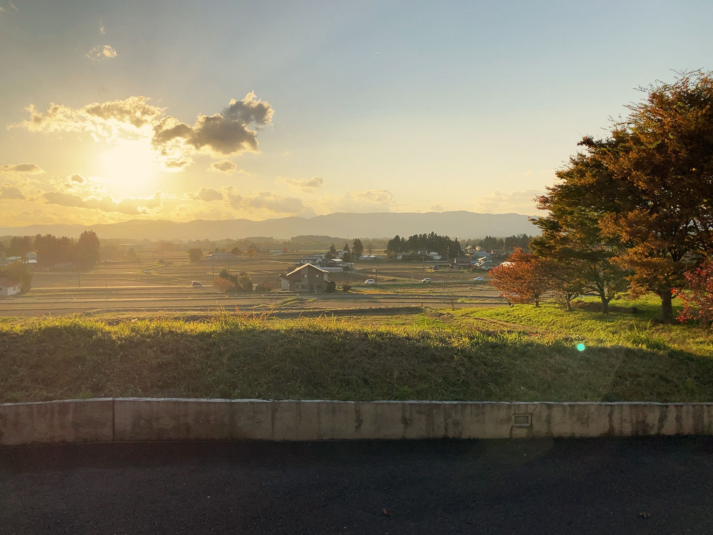
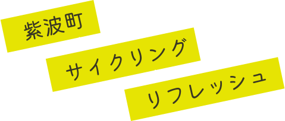

scroll

scroll
休みの時間は日常を離れたいけど、
大きな出費や計画を立てたい訳じゃない。
そんな時、ぴったりの気分転換が
ここにあります。
この町、紫波町は、 適度な建物と自然に囲まれた おだやかな場所です。
ここでのサイクリングは、時間を忘れ、
豊かな自然とあたたかい人々に触れ合いながら
新しい価値観に気付かされるような特別な体験が得られます。
紫波にしかない魅力、素敵な出会いをぜひ味わってみてください。
その体験はSECRET（シークレット）な思い出になること、間違いなし！
自転車旅にトラブルはつきもの。
それでも快適に楽しんでもらうために、
こちらにトラブルシューティングとなる
ガイドを用意しました。
これからサイクリングに向かう方は必見です。
紫波町は、岩手県のほぼ中央からやや左寄りに位置します。町の形は、横から見た靴のような形で、横長に広がっているのが特徴。
横に三等分し、左から西エリア・中央エリア・東エリアと分けられ、それぞれ独自の歴史を紡いでいます。
サイクリングコースの出発地点
JR（新幹線）
各新幹線より「盛岡駅」降車後、JR東北本線（列車）へ乗り換え
JR（列車）
東北本線より、「紫波中央駅」降車
自家用車
東北自動車道より、「紫波IC」着
県道46号より、紫波中央駅へ